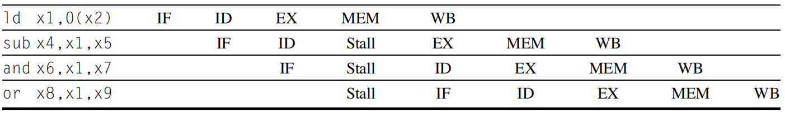

PIPELINE REVIEW
based on Computer Architecture, A Quantitative Approach (Appendix C)
Introduction
- In a computer pipeline, each step in the pipeline completes a part of an instruction. Different steps are completing different parts of different instructions in parallel.
- The throughput of an instruction pipeline is determined by how often an instruction exits the pipeline.
- The time required between moving an instruction one step down the pipeline is a processor cycle
- The length of aprocessor cycle is determined by the time required for the slowest pipe stage
- Designer's goal is to balance the length of each pipeline stage. The ideal time per instruction is equal to
$$\frac{Time\ per\ instruction\ on\ unpipelined\ machine}{Number\ of\ pipe\ stages}$$
- Ideally the speedup from pipelining equals the number of pipe stages. However, the stages will not be perfectly balanced and pipelining does involve some overhead.
- Thus, the time per instruction on the pepelined processor will not have its minimum possible value. Pipelining yields a reduction in the average execution time per instruction. Pipelining reduces the CPI
- Pipelining is an implementation technique that exploits parallelism among the instructins in a sequentilal instruction stream. It is not visible to the programmer.
The Basics of the RISC-V Instruction Set and Pipeline
All RISC architectures' features
- All operations on data apply to data in registers and typically change the entire register(32 or 64 bits).
- The only operations that affect memory are load and store operations that move data form memory to a register or to memory from a memory. Load and store operations that load or store less than a full register(8, 16, 32 bits) are available.
- All instructions are in one size. For RISC-V, rs1, rs2 and rd are always in the same place.
A multi-cycle version implementation of a RISC ISA
- Instruction fetch cycle(IF)
- Send PC to memory and fetch the current inst from memory.
- Update the PC to the next sequential instruction by adding 4.
- Instruction decode/register fetch cycle(ID)
- Decode the instruction
- Read the registers from register file.
- Do the equality test on the registers as they are read, for a possible branch
- Sign-extend the offset field of the instruction in case it is needed.
- Compute the possible branch target address by adding the sign-extended offset to the incremented PC
- Decode is done in parallel with reading registers due to fixed-field decoding
- For loads and ALU imme operations, the imme field is always in the same place. For a more complete RISC-V implementation, the imme field for store is in a different location.
- Execution/effective address cycle(EX)
- The ALU operates on the operands prepared in the prior cycle, performing one of three functions, depending on the instruction type
- Memory reference - ALU adds the base register and the offset to form the effective address.
- Register-Register ALU instruction - The ALU performs the operation specified by the ALU opcode on the values read from the register file.
- Register-Immediated ALU instruction - The ALU performs the operation specified by the ALU opcode on the first value read from the register file and the sign-extended immediate
- Conditional branch - Determine whether the condition is true.
- Memory access(MEM)
- For load, the memory does a read using the effective address computed in the previous cycle
- For store,the memory writes the data from the second register read from the register file using the effective address
- Write-back cycle(WB)
- For register-register ALU instruction or load instruction: Write the result into the register file, whether it comes from the memory system or from the ALU.
Classic Five-Stage Pipeline for a RISC Processor
Three observations to avoid functional units' conflict
- Use separate instruction and data memories. Typically implement separate instruction and data caches to avoid IF and MEM conflict.
- The register file is used in two stages: EX and WB. So we need to perform two reads and one write every clock cycle and perform the register write in the first half of the clock cycle and the read on the second half.
- During IF, we must increment and store PC every clock. Also we must have an adder to compute the potential branch target address during ID.
Also we need pipeline registers between successive stages of the pipeline
- Pipeline increase the latency of executing a single instruction.
- Imbalance among the pipe stages reduces the performance.
- Pipeline overhead arises from the combination of pipeline register delay(setup time) and clock skew.
- Pipeline register delay contributes to the lower limit on the clock cycle. Once the clock cycle is as small as the sum of the clock skew and latch overhead, no further pipelining is useful because there is no time left in the cycle for useful work.
Pipeline Hazards
Three classes of hazards
- Structural hazards: resource conflicts. Structural hazards occur primarily in special purpose functional units that are less frequently used (such as floating point divide or other complex long running instructions).
- Data hazards: An instruction depends on the results of a previous instruction.
- Control hazards: From pipelining of branches and other instructions that change the PC.
Data Hazards
Data hazards occur when the pipeline changes the order of read/write accesses to operands so that the order differs from the order seen by sequentially executing instructions on an unpipelined processor.
Assum instruction i occurs in program order before instruction j and both instructions use register x, then there are three different types of hazards
- Read after Write(RAW): when a read of register x by instruction j occurs before the write of register x by instruction i.
- Write after Read(WAR): when read of register x by instruction i occurs after a write of register x by instruction j. This will occur when instructions are reordered like dynamically scheduled pipelines.
- Write after write(WAW): when write of register x by instruction i occurs after a write of register x by instruction j. This will occur in OoO machine.
Minimizing Data Hazard Stalls by Forwarding
- The ALU result from both the EX/MEM and MEM/WB pipeline registers is always fet back to the ALU inputs.
- If the forwarding hardware detects that the previous ALU operation has written the register corresponding to a source for the current ALU operation, control logic selects the forwarded result as the ALU input rather than the value read from the register file.
add x1, x2, x3
sub x4, x1, x5
and x6, x1, x7
or x8, x1, x9
xor x10, x1, x11
add x1, x2, x3
ld x4, 0(x1)
sd x4, 12(x1)
- Data Hazards requring stalls: ld stall
The ld instruction does not have the data until the end of clock cycle 4(MEM cycle). Thus the data hazard from using the result of a load instruction connot be completely eliminated with simple hardware.
ld x1, 0(x2)
sub x4, x1, x5
and x6, x1, x7
or x8, x1, x9
For load instruction, we need to add pipeline interlock, which detects a hazard and stalls the pipeline until the hazard is cleared.

Branch Hazards